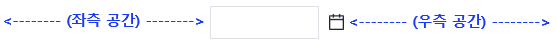
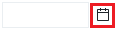
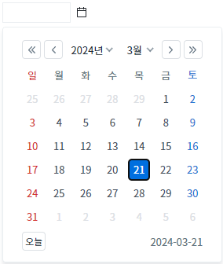
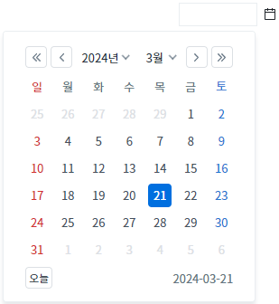
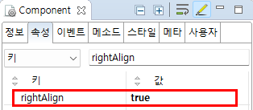

InputCalendar의 'rightAlign' 속성을 사용하여 입력 필드의 왼쪽 또는 오른쪽을 기준으로 달력이 표시되도록 설정한 예제입니다. 단, InputCalendar의 왼쪽 또는 오른쪽의 공간(너비)이 최소한 달력의 너비(width)만큼은 되어야 동작합니다. 그렇지 않으면 달력의 표시 위치가 자동으로 조절됩니다.
속성의 설정 값에 따른 동작은 다음과 같습니다.
false: [default] 입력 필드의 왼쪽을 기준으로 달력이 표시됩니다.
true: 입력 필드의 오른쪽을 기준으로 달력이 표시됩니다.
달력을 입력 필드의 왼쪽을 기준으로 표시하기
달력을 입력 필드의 오른쪽을 기준으로 표시하기
1
STEP 1: 초기 상태를 확인합니다.
예제 영역 '(기본 설정) 달력을 입력 필드의 왼쪽을 기준으로 표시하기'에 구성된 InputCalendar를 확인합니다. 기능 비교를 위해 InputCalendar를 중앙에 배치하였습니다.실행된 예제 화면의 너비(width)가 최소 500px 이상이어야 기능을 확인할 수 있습니다.
Image 1.브라우저(Chrome) 실행 예시

2
STEP 2: 달력 아이콘을 클릭합니다.
Image 2.브라우저(Chrome) 실행 예시 - 달력 아이콘

3
STEP 3: 실행된 결과를 확인합니다.
입력 필드의 왼쪽을 기준으로 달력이 표시됩니다.
Image 3.브라우저(Chrome) 실행 예시

1
STEP 1: 초기 상태를 확인합니다.
예제 영역 '달력을 입력 필드의 오른쪽을 기준으로 표시하기'에 구성된 InputCalendar를 확인합니다. 기능 비교를 위해 InputCalendar를 중앙에 배치하였습니다.실행된 예제 화면의 너비(width)가 최소 500px 이상이어야 기능을 확인할 수 있습니다.
Image 4.브라우저(Chrome) 실행 예시
2
STEP 2: 달력 아이콘을 클릭합니다.
Image 5.브라우저(Chrome) 실행 예시 - 달력 아이콘
3
STEP 3: 실행된 결과를 확인합니다.
입력 필드의 오른쪽을 기준으로 달력이 표시됩니다.
Image 6.브라우저(Chrome) 실행 예시

1
InputCalendar의 속성을 정의합니다.
[필수] rightAlign="true"
(옵션 설명)
- false: [default] 입력 필드의 왼쪽을 기준으로 달력이 표시됩니다.
- true: 입력 필드의 오른쪽을 기준으로 달력이 표시됩니다.
Image 7.웹스퀘어 스튜디오의 Component View - 속성 설정 예시

Example 1.Source
<!-- inputCalendar 의 소스 본문 예시 --> <w2:inputCalendar rightAlign="true"> </w2:inputCalendar>
rightAlign